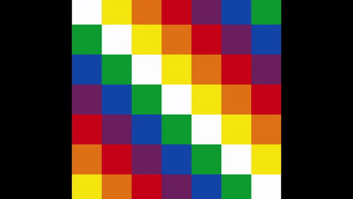
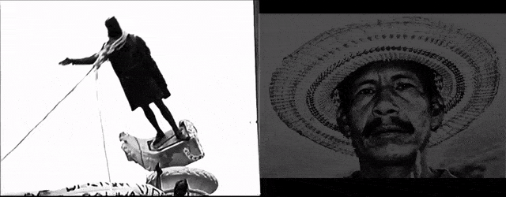
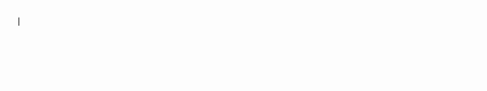
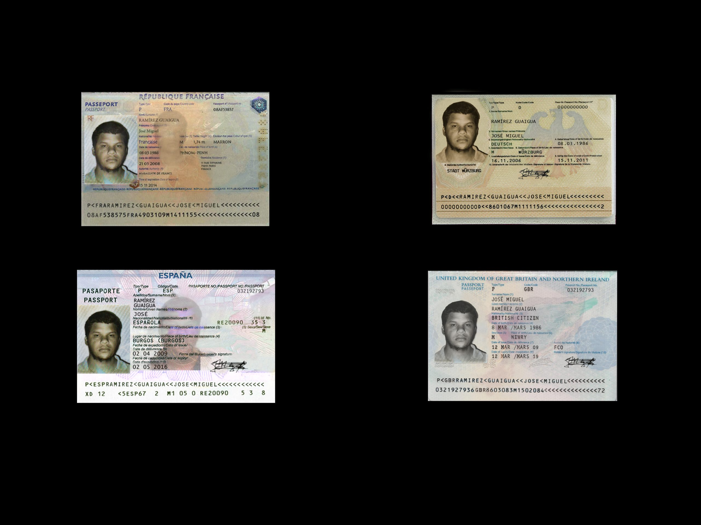

Ejercicios de Contravisualidad (2010-2019)
En este apartado comparto una selección de piezas de video y gráfica digital desarrollados entre el año 2010 al 2019 cuyo punto de conexión es la intención de construir discursos críticos subvirtiendo los recursos, códigos y dispositivos visuales del poder hegemónico: la visión cenital del dron y la georreferenciación como mecanismos de control, los documentos de identificación y perfilamiento, los monumentos nacionales, las banderas como símbolos de los estados nacionales.
Noticias de Ninguna Parte (Estudio sobre el territorio II) (2019)
Nuevas Vistas de la Naturaleza (Estudio sobre el territorio I) (2019)
Expuesta en la muestra colectiva “Por los Caminos Verdes”. Goethe Institut / Hacienda La Trinidad, Caracas, Venezuela.
Utopía Abstracta (2019)
[Proyectada en el Festival Internacional de Videoarte 1 minuto, Cuenca, España]

Ecos (De la caída de Colón en el Golfo Triste a la caída de Sabino Romero en la Sierra de Perijá) (2016)
[Videoinstalación expuesta en la muestra colectiva “Octubre Jóven” Museo de Arte de Valencia. Venezuela]


Pasaportes (2010)
[Expuesta en la muestra colectiva “Miradas a Europa” Sala “La Caja” Centro Cultural Chacao]
